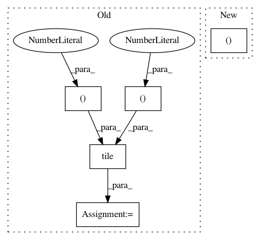

29c11f550c6b8d9e379afce9b9a2315552884b6c,deepchem/models/tf_new_models/vina_model.py,VinaModel,construct_graph,#VinaModel#Any#Any#Any#Any#Any#Any#,443
Before Change
nbr_Z = tf.gather(Z, nbrs)
// Shape (M, 3)
tiled_atom_coords = tf.tile(tf.reshape(atom_coords, (1, 3)), (M, 1))
// Shape (M,)
dists = tf.reduce_sum((tiled_atom_coords - nbr_coords)**2, axis=1)
atom_interactions = h(dists)
After Change
nbr_Z = tf.gather(Z, nbrs)
// Shape (N_protein+N_ligand, M, 3)
tiled_atom_coords = tf.tile(
tf.reshape(atom_coords, (N_protein+N_ligand, 1, 3)), (1, M, 1))
// Shape (N_protein+N_ligand, M)
dists = tf.reduce_sum((tiled_atom_coords - nbr_coords)**2, axis=2)
In pattern: SUPERPATTERN
Frequency: 3
Non-data size: 5
Instances
Project Name: deepchem/deepchem
Commit Name: 29c11f550c6b8d9e379afce9b9a2315552884b6c
Time: 2017-03-22
Author: bharath.ramsundar@gmail.com
File Name: deepchem/models/tf_new_models/vina_model.py
Class Name: VinaModel
Method Name: construct_graph
Project Name: theislab/scanpy
Commit Name: d6acc5e620a5c566b3421b1c8bf2a66a064ca5bd
Time: 2018-10-25
Author: 31883718+VolkerBergen@users.noreply.github.com
File Name: scanpy/preprocessing/simple.py
Class Name:
Method Name: normalize_per_cell_weinreb16_deprecated
Project Name: freelunchtheorem/Conditional_Density_Estimation
Commit Name: aa50234c0e3854567214a3109188ee9bedc33551
Time: 2019-01-18
Author: jonas.rothfuss@gmx.de
File Name: cde/BaseConditionalDensity.py
Class Name: ConditionalDensity
Method Name: _mean_pdf